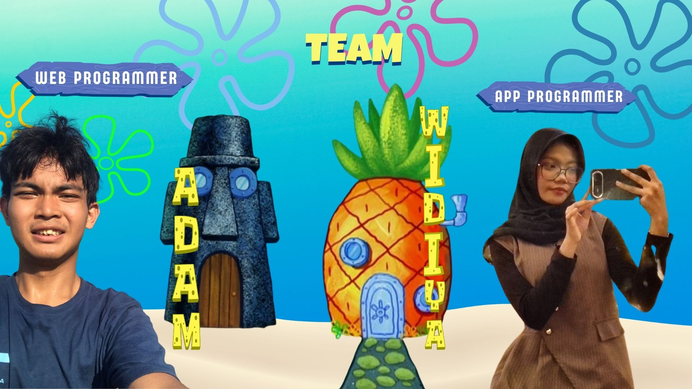
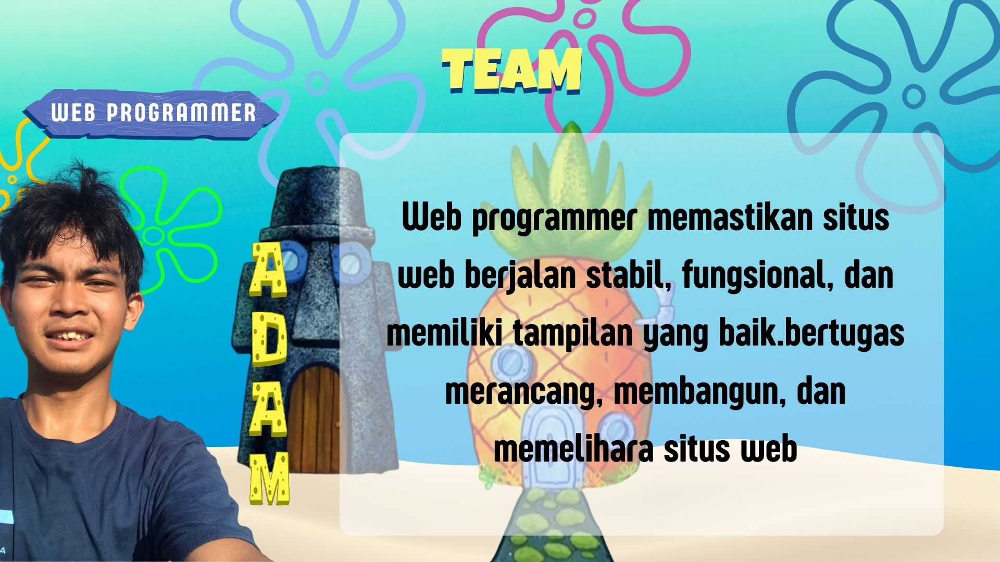
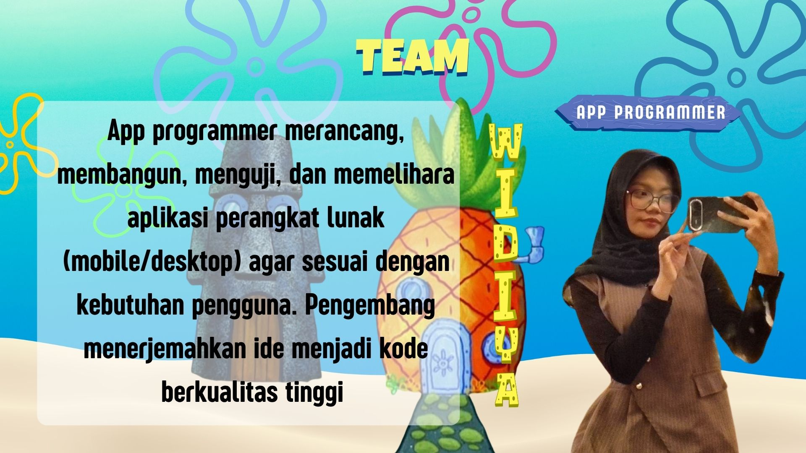
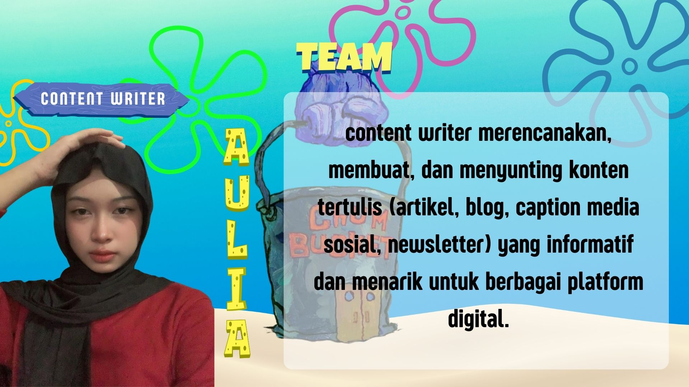
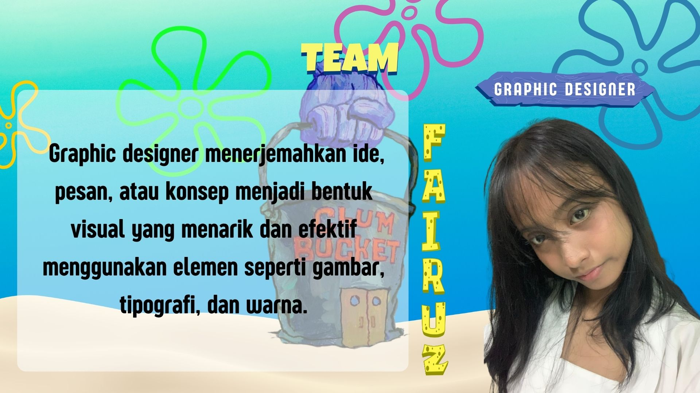
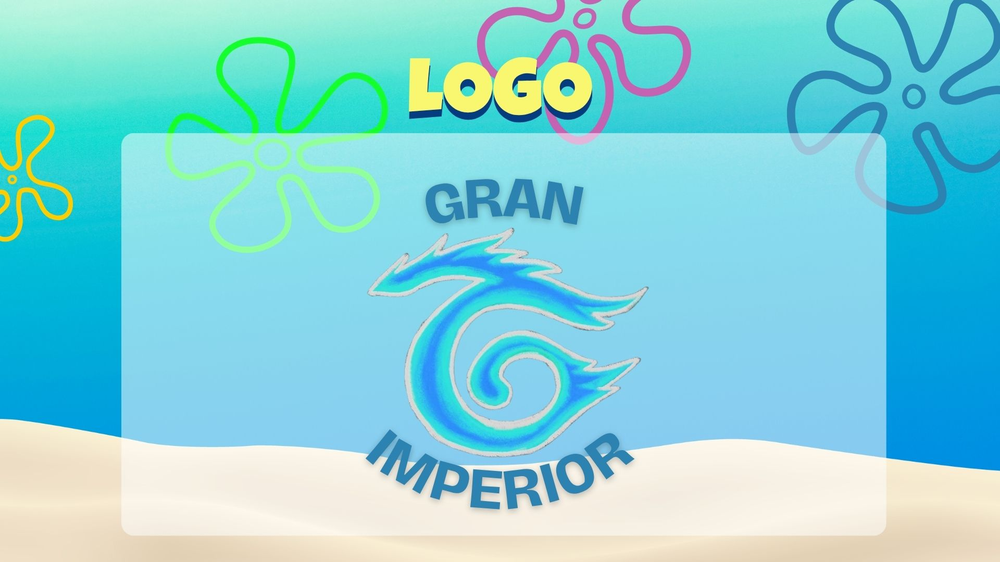
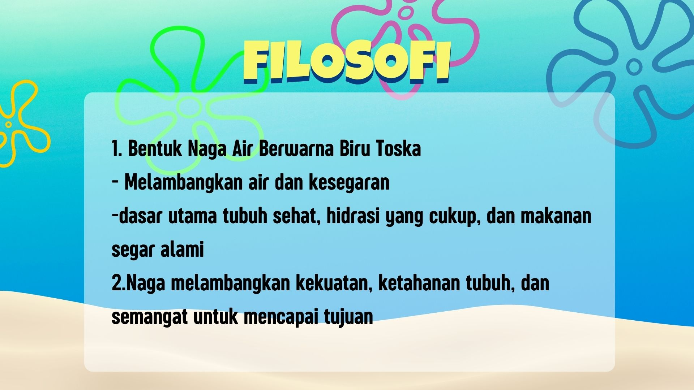
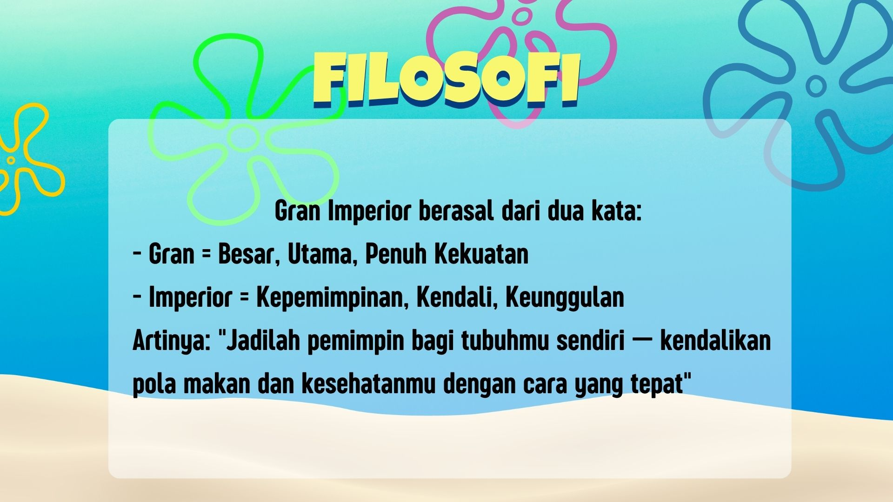
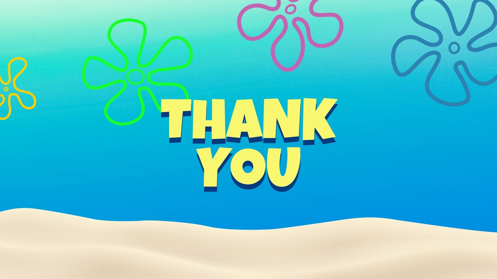

About Our Project ⚓
Di era digital yang serba cepat ini, mobilitas masyarakat urban meningkat secara signifikan. Sayangnya, perubahan gaya hidup ini sering kali tidak diimbangi dengan pola makan yang sehat. Keterbatasan waktu membuat banyak orang bergantung pada makanan cepat saji (fast food) atau makanan instan yang tinggi kalori, lemak jenuh, gula, dan sodium, namun rendah nutrisi. Dampaknya, terjadi peningkatan kasus masalah kesehatan kronis seperti obesitas, diabetes, dan stunting pada usia yang semakin muda.
Dengan adanya aplikasi yang kami buat, maka akan memudahkan para pengguna aplikasi ini dalam mencari informasi terkait makanan sehat untuk dikonsumsi.